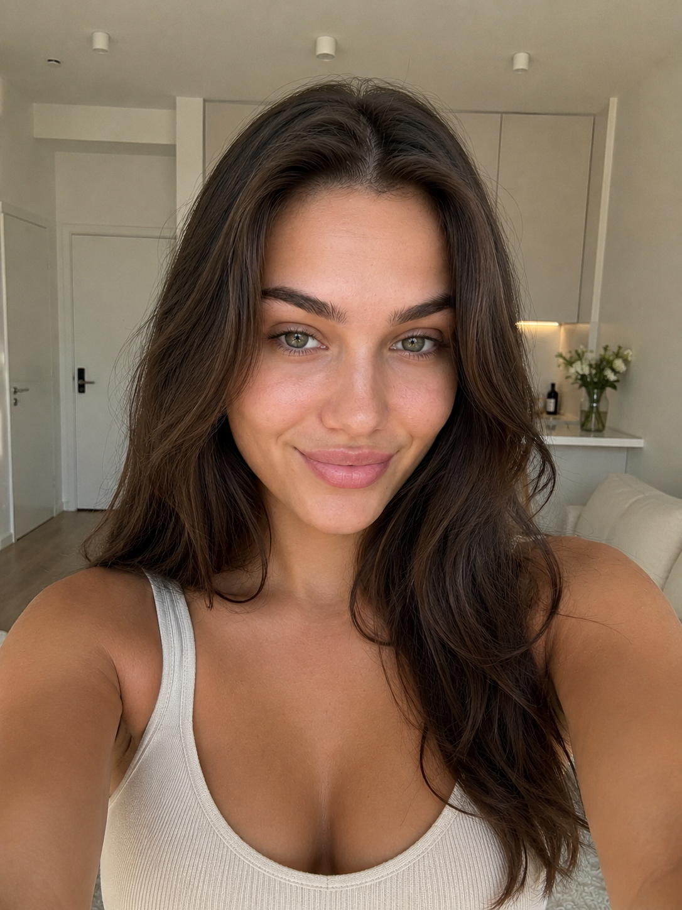
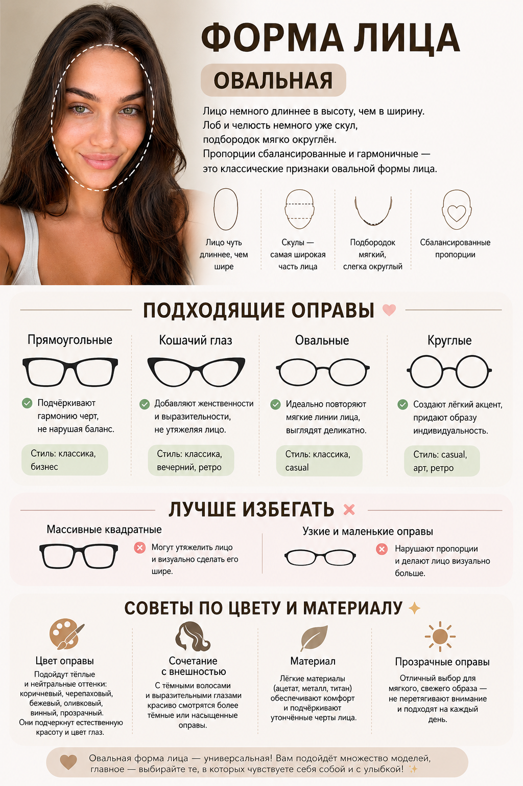
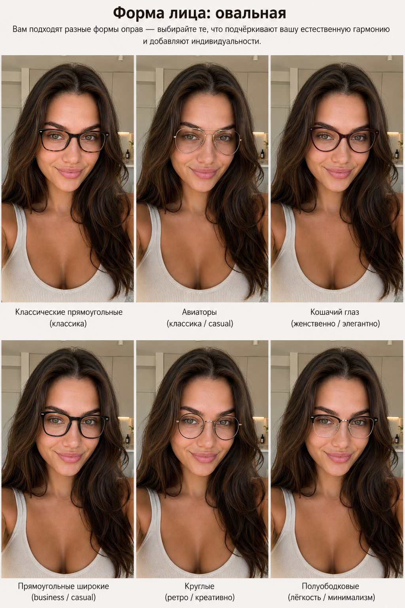

Промтзилла
Подбор очков
с помощью нейросети
Два промта для GPT Image 2 — инфографика с рекомендациями по оправам и коллаж с примеркой 6 вариантов прямо на твоё фото.
📋 Пошаговая инструкция
- 1Выбери чёткое фото анфас — лицо открыто, волосы убраны со лба, равномерное освещение без теней
- 2Перейди на study24.ai, открой GPT Image 2 и загрузи фото
- 3Выбери промт ниже — инфографика или коллаж с примеркой — скопируй и вставь в поле ввода
- 4Нажми отправить — через 20–30 секунд получишь результат
- 5Можно запустить оба промта подряд — они дополняют друг друга
- 6Скачай результат и используй как гайд при выборе очков
Промт 1 — Инфографика с рекомендациями

ВходИсходное фото

РезультатИнфографика с рекомендациями
RU
Загружаю своё фото анфас. Определи форму моего лица и создай красивую инфографику с рекомендациями по подбору оправы очков. Шаг 1 — определи форму лица: — Проанализируй пропорции: ширину лба, скул и челюсти, форму подбородка — Определи форму: овальная, круглая, квадратная, прямоугольная, сердцевидная, ромбовидная или треугольная — Кратко объясни почему — 1–2 предложения Шаг 2 — рекомендации по оправам: — 3–4 формы оправ, которые лучше всего подходят для этой формы лица — Для каждой: название формы, почему подходит, в каком стиле (классика, бизнес, casual, спорт) — 1–2 формы оправ, которых лучше избегать — и почему — Советы по цвету и материалу оправы под тип внешности Как оформить инфографику: — Весь текст только на русском языке, чёткая типографика — Структура: «Форма лица» крупно вверху → «Подходящие оправы» → «Лучше избегать» → «Советы по цвету» — Добавь схематичные иконки или силуэты форм оправ рядом с каждым пунктом — Тон дружелюбный и позитивный, без критики внешности — Не делай медицинских или возрастных оценок
EN
I'm uploading a front-facing photo of myself. Determine my face shape and create a beautiful infographic with glasses frame recommendations. Step 1 — determine face shape: — Analyze proportions: forehead width, cheekbones, jawline, chin shape — Identify shape: oval, round, square, rectangular, heart-shaped, diamond, or triangular — Brief explanation why — 1–2 sentences Step 2 — frame recommendations: — 3–4 frame shapes that best suit this face shape — For each: frame name, why it works, which style (classic, business, casual, sport) — 1–2 frame shapes to avoid — and why — Tips on frame color and material for this appearance type How to design the infographic: — All text in Russian only, clear typography — Structure: "Face shape" large at top → "Recommended frames" → "Better to avoid" → "Color tips" — Add schematic icons or frame silhouettes next to each item — Friendly and positive tone, no criticism of appearance — Do not make medical or age-related assessments
Промт 2 — Коллаж с примеркой 6 оправ
ВходИсходное фото

РезультатКоллаж с примеркой 6 оправ
RU
Загружаю своё фото анфас. Определи форму моего лица и создай коллаж — сетку из 6 фотографий с разными оправами очков, примеренными на моё лицо. Шаг 1 — определи форму лица и подбери оправы: — Проанализируй пропорции лица и определи форму — Подбери 6 оправ, которые подходят для этой формы лица — Разные стили: классика, авиаторы, кошачий глаз, прямоугольные, круглые, полуободковые Шаг 2 — создай коллаж-сетку 2×3: — 6 одинаковых портретных фото (моё лицо), на каждое наложена своя оправа — Под каждым фото: название формы оправы и стиль (1 строка) — Все фото одного размера, аккуратная сетка с тонкими разделителями — Сверху над сеткой: заголовок «Форма лица: [название]» и короткая рекомендация Требования: — Весь текст только на русском языке — Лицо, кожу, волосы не изменять — только добавить очки — Очки наложить реалистично: правильный размер, положение на переносице, тени — Тон позитивный, без критики внешности
EN
I'm uploading a front-facing photo of myself. Determine my face shape and create a collage — a grid of 6 photos with different glasses frames tried on my face. Step 1 — determine face shape and select frames: — Analyze face proportions and identify shape — Select 6 frames that suit this face shape — Different styles: classic, aviators, cat-eye, rectangular, round, semi-rimless Step 2 — create a 2×3 collage grid: — 6 identical portrait photos (my face), each with a different frame overlaid — Below each photo: frame shape name and style (1 line) — All photos same size, neat grid with thin dividers — Above the grid: heading "Face shape: [name]" and a short recommendation Requirements: — All text in Russian only — Do not alter face, skin or hair — only add glasses — Apply glasses realistically: correct size, position on the nose bridge, shadows — Positive tone, no criticism of appearance
Теги